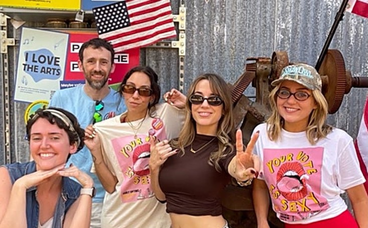
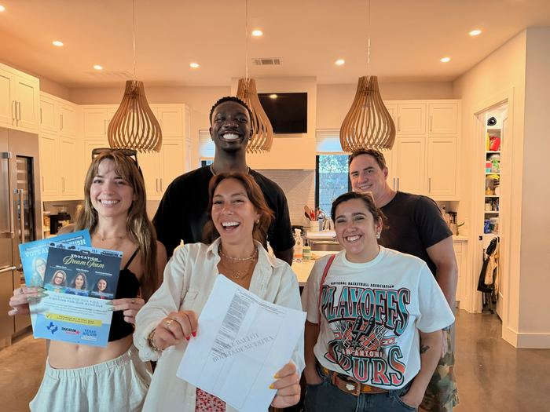
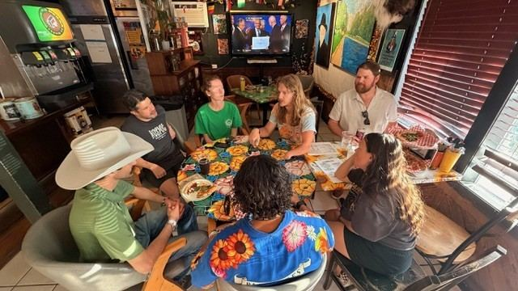
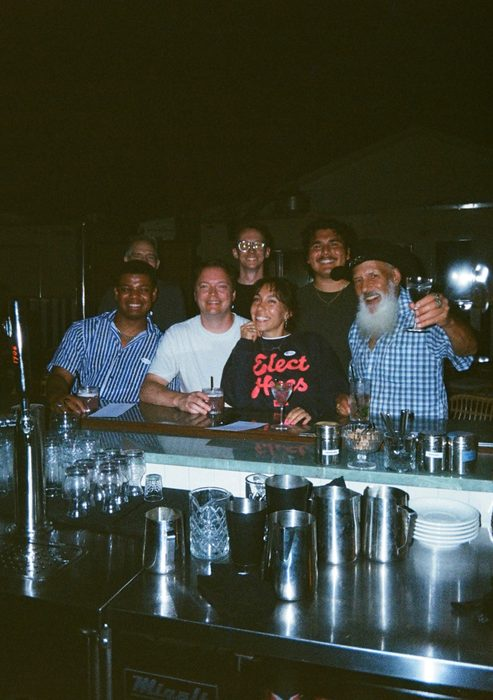
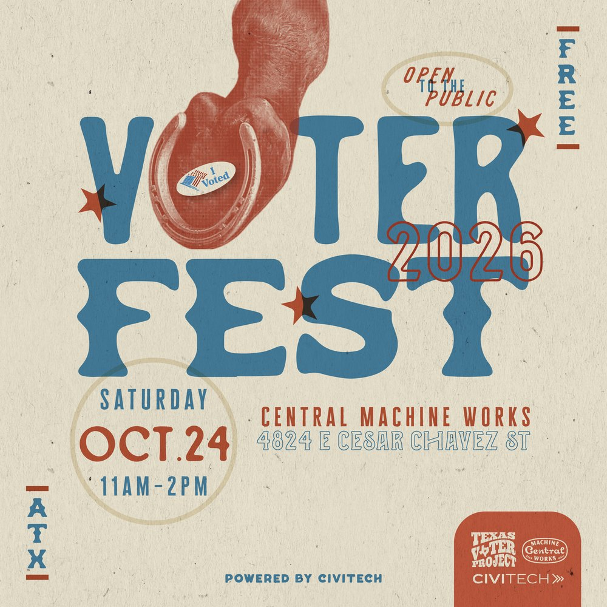
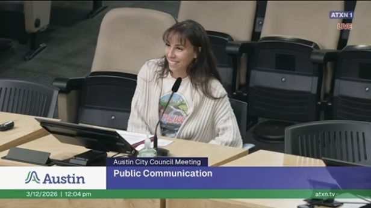

Pinot, Pizza & Politics
Free pizza, BYOB, and the ballot as a group project. Everyone researches a race and presents it.
Texas Voter Project builds both for young Texans: plain-language guides to who holds power, and real-life third places where people actually want to show up.
I'm here to…
Our events are small on purpose: pizza and ballot research, board game nights, trivia, pop-ups at the polls. Come once and you'll know people the next time.
TVP is a fiscally sponsored 501(c)(3) project working to raise civic participation among Texans 18 to 35. This fall we ran 21 events on about $20K in election-only grants.



Fall 2026, in one sentence
We hosted 5 voter registration events, 15 small gatherings and 1 festival, built 500+ real relationships, and did it all on about $20K in election-only grants with no paid staff.
Knowing how government works and knowing people who care about it grow together. So we build them together.
Most voter guides assume you already know what a county commissioner does. Ours start there, then show where candidates stand on the issues, not just their party.
No experience, no politics degree, no plus-one required.
Free pizza, BYOB, and the ballot as a group project. Everyone researches a race and presents it.
Trivia nights at local spots, with voter registration at the door.
Board game nights where candidates and voters meet as equals. No campaigning.

Pop-ups at polling places with Dogland: dog treats, bandanas and a selfie stop.

Neighborhood crawls through Zilker, Bouldin Creek and Barton Hills.

Our early voting block party: DJs, bracelets, tarot readers and nonpartisan voting info.
Every event leads somewhere. People come back, get curious, and start showing up in places where decisions get made.
Then back to the start, bringing a friend. From there people host, volunteer, join boards and run. See the full path

The short version, for anyone deciding whether to invest in this work.
Election grants end on Election Day. The relationships don't. The time between elections is when trust gets built, and it's the hardest work to fund.
For grants, partnerships and larger gifts, email our founder directly.
sophia@texasvoterproject.org
Texas Election Protection coalitionTexas Youth Power AllianceMOVE TexasJoltGrita Canta VotaMi Familia VotaCommon CauseDeeds Not WordsPlanned Parenthood Advocates of TexasCenter for Artistic ActivismSan Antonio Area FoundationSEATCivitechDoglandThe Flock
Get on the guest list for event invites, ballot breakdowns and whatever we're planning next. We email when there's something worth showing up for.
Prefer texts? Sign up for text invites